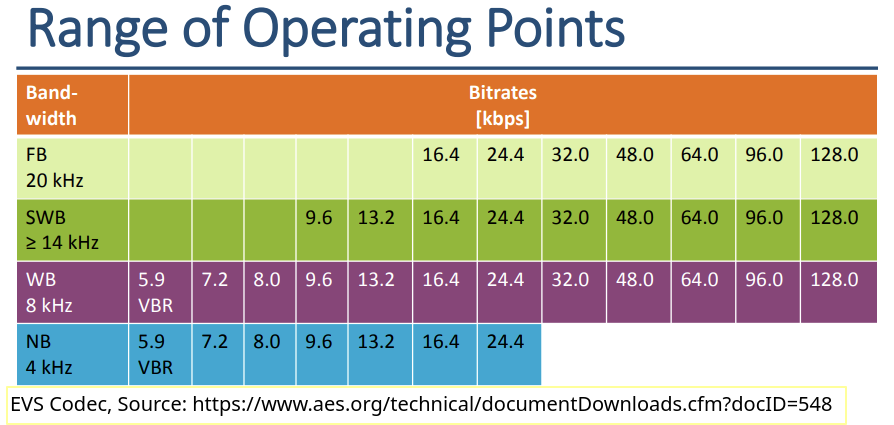
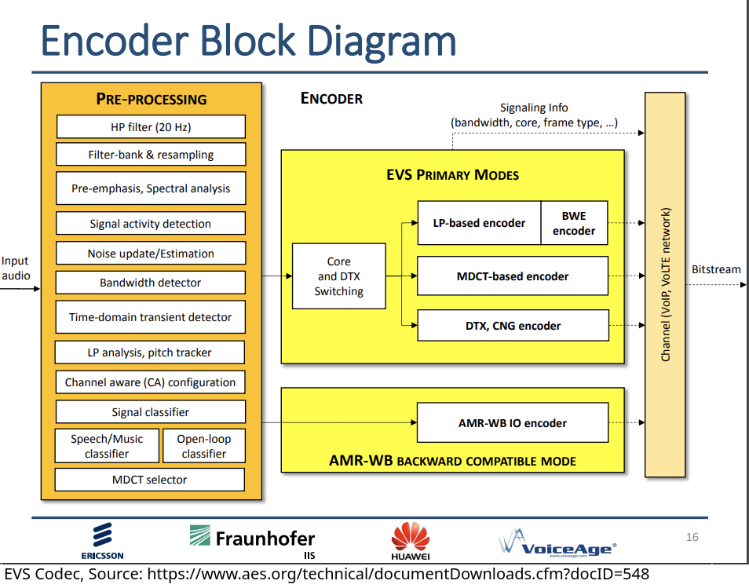

# Speech Codecs and Encryption ### Will Styler - LIGN 168 --- ### Now we know what sound looks like - We know how to save it in an uncompressed file - We know how we can compress sounds for storage or transmission - ... but isn't speech special? --- ### Today's Plan - Is speech special? - What are speech codecs? - Why is bitrate is so important for speech? - How do speech codecs work? - Voice Encryption --- ## Is Speech Special? --- ### This is a huge open question in speech perception - Some theories treat speech perception like any other sound perception task - "We connect acoustic signatures to specific speech sounds like we do any other" - "Modeling the acoustics of the inside of a face is much like modeling the acoustics of the inside of a room" - Some theories treat speech as special - "Our perception of linguistic sound is *fundamentally different* than our perception of other sounds" - "We understand how human speech is made, so we use that specific knowledge to understand spoken language" --- ### Luckily, we don't have to solve that problem in Speech Processing - We ask a simpler question... --- ### Do we get better results when we treat speech as different from any other environmental sound? - Are we able to *analyze* speech more effectively by using speech-specific algorithms? - Are we able to *compress* speech more effectively by using speech-specific algorithms? - Are we able to *recognize* speech more effectively by using speech-specific algorithms? - Are we able to *generate* speech more effectively by using speech-specific algorithms? --- ### Are linguists necessary or helpful when doing computational speech processing? --- ### Speech can also be especially problematic - We are very sensitive to problems with the speech signal - Nuances which we might not notice in music are very noticeable in your BFF's voice on Zoom - Tiny changes in the signal can have an outsized perceptual impact on speech - It's very easy for a speech signal to sound 'robotic' or 'distorted' --- ### So far, speech hasn't been very special - Analyzing Sound and Analyzing Speech are often done using the same tools - LPC was developed for speech, but is used for sound more generally! - MFCC was developed for speech, but is used for sound more generally! - Speech signal processing has driven general sound processing! --- ### We'll keep seeing this question as we move through the quarter! - Today, we'll think about compression! --- ## Speech Codecs --- ### Review: Codecs - A 'codec' is used to encode and decode a signal - Often, codecs include some degree of compression - Many different codecs exist for the same kind of data --- ### We've talked about a number of codecs already - FLAC is a great lossless audio codec which works *for any audio* - mp3 and AAC are great lossy audio codecs which work *for any audio* - Opus is a great free and lossy audio codec which works *for any audio* --- ### Compression works better when we throw out more information - It's easier to compress a file when we know which frequencies aren't relevant and which are - Signals with a known kind and structure are easier to model more completely - When you model the signal better, you save fewer residuals - Signals with strong autocorrelation and slow transitions are easier to model completely - Psychoacoustic knowledge about *what's most important* allows us to make better decisions about what we throw away - **So, do we compress better when we make a speech-specific codec?** --- ### Speech Codecs are designed to do better with speech than anything else - "We know what speech is like, so let's focus doing that better than anything else" - "We're going to assume everything coming through is speech, and compress accordingly" - "I don't care if it makes music sound worse, that's not what we're trying to do here!" - "I have very little bandwidth available, and I want to use all of it for the things that make speech understandable" --- ### Well-known speech codecs - **G.711**: This is what Campus Phones and Landline networks now use - **Adaptive Multi-Rate (AMR)**: Used to compress speech on cell networks. Will be replaced by... - **Enhanced Voice Services (EVS)**: The next-gen, '5G' codec for cell phone use - **Speex**: A speech-focused codec for low-bandwidth situation, largely replaced by... - **Opus**: A general purpose codec, but with a strong speech subsystem --- ## Why does bitrate matter so much? --- ### Speech Codecs are a balancing act - We want the speech to sound as 'clear' and 'interpretable' and 'natural' as possible - We want the signal to be sent using as little data as possible - You cannot do both of these things at once - A better codec will 'sound better' for the same amount of bandwidth - This is the "**Efficiency/Quality Tradeoff**" --- ### Perfection is possible, but costly - 44,100 Hz 16bit WAV files will perfectly capture every detail of human speech which matters (for 1400 kbps) - The median internet upload speed is 44000 kbps - 4G cell towers max out around 100,000 kbps **total** bandwidth for everybody connected to it - 3G towers drop down to 42,000 kbps **total** bandwidth - Global Satellite internet hotspots (e.g. [Iridium GO! Exec](https://www.iridium.com/products/iridium-go-exec/)) have a 22 kbps uplink - *Speeds are not consistent, and degrade very quickly, so we need to compress* --- ### Streaming requires low latency - You can send any file over any connection if you're willing to wait - Conversations require low latency to work well - Latency around 150ms is acceptable, but over 300ms is *bad* - *You need to send the data faster than you can play it back, no matter your connection* --- ### Failure is not an option - It is much more acceptable to *degrade* a voice stream than it is to *drop* a voice stream - It's not good to say "Ah, screw it, we'll just send the latest chunk to catch back up and drop the stuff in the middle" - We can cope with a poor signal more easily than with an inconsistent signal that cuts in and out - So, it's often better to send a lower bitrate *just in case* the signal degrades --- ### Bitrate Options - Many speech codecs will offer different bitrate options - Options favoring quality, Options favoring compression - Sampling rate is also a meaningful variable --- ### Bitrate and Sampling Rate Selection for EVS (in kHz)  --- ### Variable Bitrates are also very possible - "Well, we've got lots of bandwidth right now, so let's increase the quality" - "Uh oh, this person's cell tower is a potato, let's reduce the quality" - "Uh, nobody's talking on this voice call, let's compress *hard*" --- ### Bitrate is a choice that can be made based on... - Network conditions - Service Level (e.g. '5G' vs '4G' vs '3G') - Data usage - Dynamic Measures of Quality of Experience - User choice! --- ### Regardless of bitrate, speech codecs work the same - Let's talk about that! --- ## How do Speech Codecs work? --- ### We're going to talk about three examples - **G.711**: This is what Campus Phones and Landline networks now use - **Enhanced Voice Services (EVS)**: The next-gen, '5G' codec for cell phone use - **Opus**: A general purpose codec, but with a strong speech subsystem --- ### G.711 - This was developed in **1972** - OK Boomer Codec - G.711 has an 8,000 Hz Sampling Frequency and 8 bit depth - That's all the compression - It uses a [companding](https://en.wikipedia.org/wiki/Companding) algorithm to compress the amplitude range and expand it on the other side - Quiet parts go away, louder parts are more prominent - This makes 8 bit audio sound better than it has any right to - It is *very simple*, computationally - There's no framing, no psychoacoustics, no modeling --- ### Enhanced Voice Services (EVS) - Released in 2014 by [3GPP](https://en.wikipedia.org/wiki/3GPP), a consortium of standards-makers for mobile telecom - It offers a number of bitrates and sampling rates - Lots of quality options - It is heavily patent-encumbered, and requires licensing to use - It uses a number of techniques to compress sound --- ### EVS Bitrate Matrix --- ### The EVS Process - Step 1: Framing and Pre-Processing - Step 2: Encoding - ACELP and Residual Processing AND/OR - MDCT Coding with Psychoacoustic Processing - Step 3: Error Correction Coding and Transfer - Step 4: Reconstruction and Playback --- ### Step 1: Framing and Preprocessing - **Framing**: This is 20ms - **Voice Activity Detection**: Yep, same VAD we talked about a while back - If the person you're transmitting is silent, don't send data at all ('Discontinuous Transmission') - **Noise Removal**: We covered this - Wow, it's almost like the class is arranged in a certain way for a reason! - There's lots of other preprocessing we're not covering... --- ### Step 2: Encoding - Now, EVS looks at the frame's acoustics and the VAD output and makes decisions about which encoding method(s) to use - ACELP and Residual Processing - MDCT Coding --- ### Algebraic code-excited linear prediction (ACELP) - This functions *exactly* the same as our familiar LPC when modeling the filter - It models the source using a *codebook* of possible excitation sequences - Picture a dictionary of possible ways that phonation/excitation could look - Don't store the wave, store pattern 'A', 'B', 'C', 'A', 'C' - Some entries are fixed, and 'come with the algorithm' for use - These are especially useful for noise-like or aperiodic functions --- ### Algebraic code-excited linear prediction (ACELP) Continued - Some entries are based off patterns in prior frames - "Hey, four frames ago they did this, and now they did it again. Just repeat that." - "Find combination of the filter shape and excitation type which model the signal best" --- ### ACELP and Residual Processing - We do the same thing we did with LPC in FLAC - Model the signal, then describe the noise that's left over - ACELP allows us to capture more of the signal cheaply, now that it models the source too - Remember that vanilla LPC leaves the source to the residuals --- ### Modified Discrete Cosine Transform Encoding - Yes, this is the same thing that we talked about for mp3 - Use a [Modified Discrete Cosine Transform](https://en.wikipedia.org/wiki/Discrete_cosine_transform) to turn the data into coefficients representing components in the frequency domain - Save more, less, or no detail for chunks of the signal *based on how humans perceive sound* - Psychoacoustic Models are used here again to remove unimportant sounds - **This can be done on the ACELP residuals or the frame directly** --- ### Dynamic Choice of Encoding Methods ('Hybrid Coding') - **EVS can choose which method works best for a given frame** - For speech-heavy frames, use ACELP/Residuals - That'll compress better and give better speech results - For music or other sound, use MDCT encoding *on the frame directly* - That'll better preserve non-speech spectral features, even if it uses more bits - This is chosen using a classifier based on the audio and the VAD output - This is done **frame by frame** --- ### Step 3: Error Correction Coding and Transmission - Encode each frame in a way that allows you to detect errors - Send frame information redundantly, allowing the receiver to reconstruct any frames which were lost in transmission - Specialized modes exist for particularly terrible channel conditions - **We could spend a career on error correction methods** - Send frames bundled together, for redundancy --- ### Step 4: Reconstruction and Playback - Turn the ACELP and MDCT coded frames back into audio - Synthesize in high-frequency components which might have been dropped at a given bitrate - This is 'BWR', 'bandwidth extension receiver' - Post-Process as needed - Add in background noise during discontinuous transmission gaps - 'Comfort Noise Generation' to differentiate from a dropped call --- ### Let's look at the whole thing  --- ### Let's look at the whole thing <img class="r-stretch" src="phonmedia/evs_decoder.png"> --- ### You should understand... - Why ACELP is useful and compresses better than LPC - Why you might want both a DCT and LPC mode for a codec - Why VAD is helpful in this process? --- ### EVS is the next generation of cellular audio - Custom designed for phone providers - It is a prototypical voice codec, purpose built - It is at the cutting edge, with *all* the features --- ### Opus - It also uses an LPC-ish speech codec ([SILK](https://en.wikipedia.org/wiki/SILK)) and an MDCT encoder - SILK is used for speech mode, CELT (the MDCT encoder) is used for general audio, and there's a hybrid mode which combines LPC and DCT for low and high frequencies - It's completely free and open source - Opus is used by YouTube, WhatsApp, Signal, SoundCloud, Vimeo, Discord, and more! - **If you need a speech (or audio) codec, Opus is currently your best general choice** --- ### Opus Speech Compression (re-waved for compatibility) 128kbps <audio controls src="phonmedia/rainbow_128voice.opus.wav"></audio> 64 kbps <audio controls src="phonmedia/rainbow_64voice.opus.wav"></audio> 32 kbps <audio controls src="phonmedia/rainbow_32voice.opus.wav"></audio> 16 kbps <audio controls src="phonmedia/rainbow_16voice.opus.wav"></audio> 8 kbps <audio controls src="phonmedia/rainbow_8voice.opus.wav"></audio> 6 kbps <audio controls src="phonmedia/rainbow_6voice.opus.wav"></audio> --- ### Opus General Audio vs. Speech (re-waved for compatibility) 16 kbps Audio <audio controls src="phonmedia/rainbow_16audio.opus.wav"></audio> 16 kbps Voice <audio controls src="phonmedia/rainbow_16voice.opus.wav"></audio> 8 kbps Audio <audio controls src="phonmedia/rainbow_8audio.opus.wav"></audio> 8 kbps Voice <audio controls src="phonmedia/rainbow_8voice.opus.wav"></audio> 6 kbps Audio<audio controls src="phonmedia/rainbow_6audio.opus.wav"></audio> 6 kbps Voice <audio controls src="phonmedia/rainbow_6voice.opus.wav"></audio> --- ### mp3 vs. Opus General Audio vs. Opus Speech 128 kbps mp3 <audio controls src="phonmedia/nothingsomething128kbps.mp3"></audio> 128 kbps Opus Audio <audio controls src="phonmedia/nothingsomething128audio.opus"></audio> 128 kbps Opus Voice <audio controls src="phonmedia/nothingsomething128voice.opus"></audio> 32 kbps mp3 <audio controls src="phonmedia/nothingsomething32kbps.mp3"></audio> 32 kbps Opus Audio <audio controls src="phonmedia/nothingsomething32audio.opus"></audio> 32 kbps Opus Voice <audio controls src="phonmedia/nothingsomething32voice.opus"></audio> --- ### mp3 vs. Opus General Audio vs. Opus Speech 8 kbps mp3 <audio controls src="phonmedia/nothingsomething8kbps.mp3"></audio> 8 kbps Opus Audio <audio controls src="phonmedia/nothingsomething8audio.opus"></audio> 8 kbps Opus Voice <audio controls src="phonmedia/nothingsomething8voice.opus"></audio> 6 kbps Opus Audio <audio controls src="phonmedia/nothingsomething6audio.opus"></audio> 6 kbps Opus Voice <audio controls src="phonmedia/nothingsomething6voice.opus"></audio> --- ### So, is speech special for compression? - We get better compression when we model speech as speech - We get better performance when we model music as not-speech - Similar methods apply, but *speech is different!* - So, **YES!** --- ### Now we can turn speech into a series of frames - ... and we can stream those frames over any connection - This allows something *incredibly* valuable --- ## Voice Encryption --- ### Voices couldn't be sent without air for most of human history - Then, we could turn them into electricity send them over radio waves - ... but this caused a problem - **Anybody can monitor radio waves, so no communications are private!** --- ### The First Voice Encryption Algorithm wasn't computational at all! - In WWI, WWII, Korea and Vietnam, radio encryption was not a thing * This meant that anything you said into a radio, Hitler heard. - This gave rise to the first method of voice encryption: **Use a language the enemies can't understand!** --- ### Code Talkers * Speakers of obscure languages who speak their language as "code" during war to communicate * Choctaw, Cherokee, Comanche, Seminole, Navajo, and Basque were all used this way * Code words were used ("Turtle" for "tank", "Gah" ("rabbit") for R) to further complicate things! * The movie "Windtalkers" is about these soldiers * Let's talk about Navajo --- <danger>What features would you want a language to have if you wanted it to be difficult for an outsider to understand?</danger> --- ### Aside: Navajo is a great code-talking language - Lots of speakers, only in central US, no easy overseas relatives - Unusual consonants, length, tone, nasality - Complex modality, aspect - Noun class and classifiers - This means you often don't need to give a noun twice! - Strong synthetic morphology! --- <lang>Navajo</lang><br><ldata>Na-Dené - SW United States</ldata> <iframe data-autoplay width="840" height="500" src="http://www.youtube.com/embed/XFayFUiyv20?start=20"></iframe> --- ### This was actually very effective! > At the Battle of Iwo Jima, Major Howard Connor, 5th Marine Division signal officer, had six Navajo code talkers working around the clock during the first two days of the battle. These six sent and received over 800 messages, all without error. Connor later stated, "Were it not for the Navajos, the Marines would never have taken Iwo Jima." --- ### It's useful to be able to do this without two dedicated people - Partly because the US Government was still sending Navajo kids to boarding schools in an attempt to kill off the language and culture - Yikes --- ### Is there a computational way to ensure a transmitted message can't be intercepted? --- ### Voice Encryption is boring now! - First, you encode the signal using a voice codec - This creates a stream of digtally encoded frames which you can send over any connection - The US Military has specific codecs for this, including MELPe - Mixed-Excitation Linear Prediction Enhanced - Then, you can just encrypt that stream! --- ### Encryption is one of the coolest things ever - It is several lifetimes worth of learning - But it involves using fancy math to obscure a series of bytes --- ### Encryption Algorithms (Oversimplified) - 'Trap door' functions are hard *only in one direction* - *Prime Factorization* is a good example - 'This number is the product of two very large prime numbers, what are they?' - *Extremely* expensive to calculate prime factors - *Extremely* easy to confirm that you've got the correct answer - Your passphrase is used to generate a key which is one large number in a trapdoor function - The bits of the file are shuffled around such that they can only be un-shuffled in the right order with the 'key' number in hand using an algorithm like AES --- ### The numbers used are very large - AES-256 uses 256 bit numbers to do this math - 115,792,089,237,316,195,423,570,985,008,687,907,853,269,984,665,640,564,039,457,584,007,913,129,639,935 is the largest 256 bit number - You would need to try a *lot* of numbers (2^255 keys) to get the answer - If every computer on Earth worked together to crack an AES 256 key, it would take approximately 13,668,946,519,203,305,597,215,004,987,461,470,161,805,533,714,878,481 years [(Source)](https://scrambox.com/article/brute-force-aes/) - Not perfectly secure, but damned close --- ### You can stream encrypted data - Exchange keys with the other party, somehow - Encrypt each frame (or packet of frames) along with a counter - Send frames as they're generated - The receiver decrypts frames as they arrive, ensuring that the counter matches - *This is the world's worst explanation of AES Streaming using GCM* --- ### Now, we can send encrypted voice packets - In a way that is (basically) impossible to read without the key - This is excellent for military communications - This is becoming common for police departments - There are questions to be asked about this - It takes some extra processing, but it's shockingly fast and efficient on modern machines! --- ### Wrapping up - Speech may be special - ... and certainly is for compression! - Speech codecs allow us to send voices over tiny bandwidths - Bitrate is hugely important, and the quality/efficiency tradeoff is difficult - Speech Codecs usually work using some flavor of LPC - ... and good ones offer some additional DCT-based approach too for non-speech information - Voice encryption just uses a speech codec, and then encrypts the output --- ### Next time - So, what are we doing with all these files, anyways? --- <huge>Thank you!</huge>